Pipes & Redirection
Why control the flow of data?
Until now, commands have mostly displayed information on the terminal. Run ls and you get:
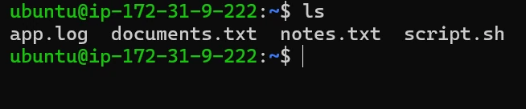
The output appears on screen and then scrolls out of view. But you often need more. You may want to:
- save output into a file,
- add new information to an existing file,
- use a file as input to a command,
- send one command’s output into another command,
- combine several small commands into one bigger task.
That is the default path. Pipes and redirection let you change where a command’s input comes from and where its output goes.
Why data flow is needed
Picture an administrator whose ls returns hundreds of names. Looking at them on the terminal may not be enough; they may want to save the result. Or a server.log with thousands of lines where they only want the lines containing ERROR. Instead of manually searching the file, they can connect commands:
So Linux gives us ways to control the flow of data. The four important operators in this chapter:
>
output → file (replace)
>>
output → file (append)
<
file → input
|
command → command
The foundation: three standard streams
Before the operators, you need to know where a command normally gets information and where it sends it. Every command has three channels, each with a number:
| Stream | Number | What it is | Default |
|---|---|---|---|
| stdin (standard input) | 0 | where a command gets its input | keyboard |
| stdout (standard output) | 1 | the normal output of a command | terminal |
| stderr (standard error) | 2 | error messages | terminal |
stdin in action
Standard input is the normal source of input for a command, usually the keyboard. If a command asks you to type something, the flow is:
Example: cat waiting for keyboard input. Run cat with no file name:
catIt waits for input. Now type Hello Linux and press Enter:
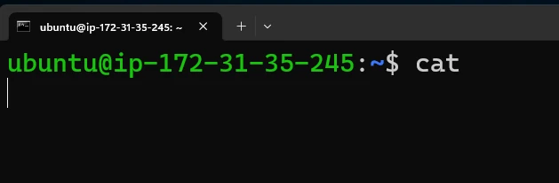
cat is waiting on stdin.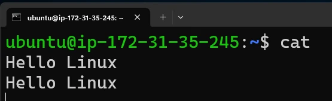
cat received your line through stdin (0), here from the keyboard, and echoed it straight back through stdout (1). Press Ctrl + D to say “input finished” and exit. For beginners, remember: stdin is where a command gets its input.
stdout in action
When a command successfully produces normal information, that is standard output (stdout). Normally it goes to the terminal.
echo Hello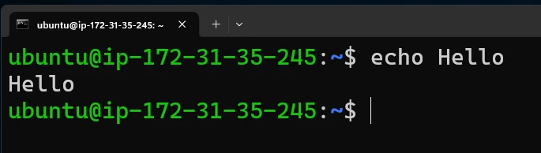
echo sent “Hello” through stdout (1). That stream number matters the moment you want to send the output somewhere else. For beginners: stdout is the normal output produced by a command.
stderr in action
Commands can also produce error messages. Example: accessing a file that does not exist:
cat nonexistent_file.txt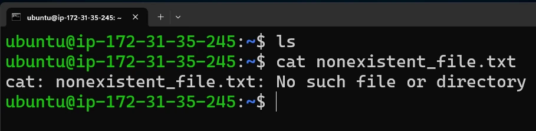
This message travelled through stderr (2), not stdout. Linux treats it as a completely separate stream, so you can handle normal output and errors independently.
> · send output to a file
Normally ls prints its output directly on the screen, as you saw at the start:
But sometimes we don’t want the output only on the screen; we want to save it into a file. That’s where > is useful: > changes the normal destination of the command’s output.
command > file # run the command and put its output into this file> is used to send output to a file, create a new file containing it, or replace a file’s existing content.
Practical example
First, check what files are in your current directory:
ls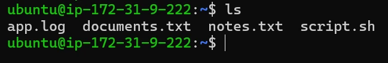
Now suppose your teacher asks: “Save the list of files into a file called files.txt.”
ls > files.txt # nothing is printed this time…
cat files.txt # …because it all went into the fileLinux takes the output of ls and puts it into files.txt. The output is now stored in the file, and you can check it with cat:
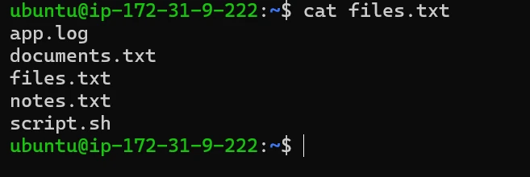
files.txt itself.files.txt does not contain the actual files; it holds the names (text) printed by ls. And it lists files.txt itself, because the shell creates the file before ls runs. (Into a file, ls also writes one name per line.)Does > create a new file?
Yes. If files.txt doesn’t already exist, ls > files.txt makes Linux create it:
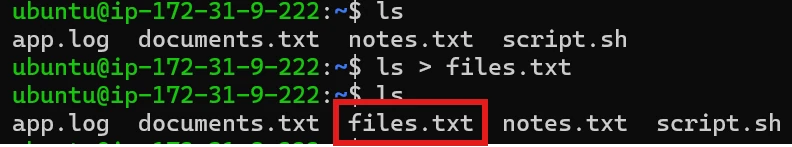
files.txt, ls shows files.txt (boxed in red)" width="792" height="147">files.txt. After ls > files.txt: there it is (boxed).> overwrites existing content
This is one of the most important things to remember about >. Suppose we create a file and check it:
echo "Hello" > message.txt
cat message.txt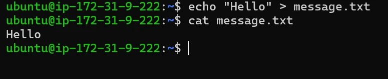
message.txt, cat message.txt prints Hello" width="775" height="159">message.txt contains Hello.Now run > again on the same file, and check again:
echo "Linux" > message.txt
cat message.txt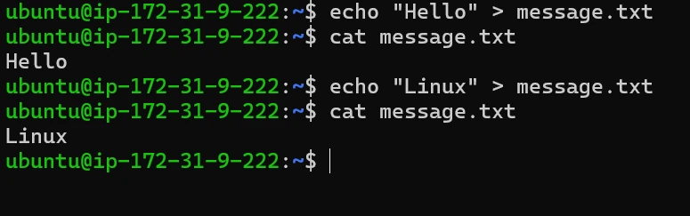
message.txt, cat message.txt prints only Linux" width="775" height="243">Linux is left.Where did Hello go? It was replaced. The second > didn’t add “Linux” after it; it overwrote the existing content. Remember: > creates a file if needed, but if the file already contains data, the old content is replaced.
> empties the file before the command even starts. Typing > when you meant >> on an important log or config wipes it. Bash’s set -o noclobber makes > refuse to overwrite existing files.>> · append to a file
Often you want to keep the old information and add new information after it. A log is the perfect example: after Server started, a User logged in event happens, and you want both lines.
command >> file # run the command and add its output to the END of this file> starts the file over; >> writes after what’s already there.For example: echo "User logged in" >> app.log.
Practical example: build a log step by step
Imagine you are a student learning how log files work. Create the file, write the first entry with > (it is the first entry), then a user logs in: you must keep Server started, so use >>:
touch app.log
echo "Server started" > app.log # first entry: > is fine
echo "User logged in" >> app.log # keep the old line, add a new one
cat app.log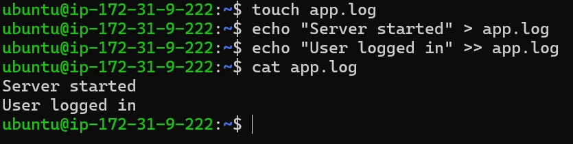
app.log, echo User logged in >> app.log, cat app.log prints both lines" width="835" height="211">Another event happens: the backup is completed.
echo "Backup completed" >> app.log
cat app.log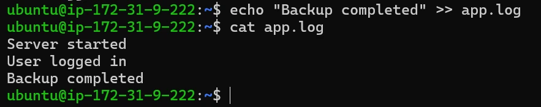
> app.log, cat app.log prints Server started, User logged in, Backup completed" width="883" height="175">Every >> adds the new information at the end, and the old content stays.
And if the file doesn’t exist?
>> can also create the file, just like >:
echo "First entry" >> new.log
ls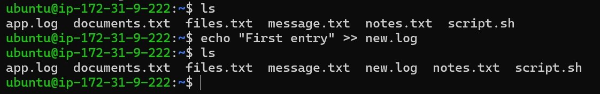
> new.log, ls lists new.log" width="1122" height="178">new.log appears in the second listing.< · take input from a file
Now the opposite direction. > and >> send output to a file. < takes information from a file and gives it to a command as standard input, so you don’t have to type it again.
command < file # run the command and take its input from this fileWith app.log from above (Server started / User logged in / Backup completed):
Normally, we can tell cat to read the file directly. Now use < instead:
cat app.log
cat < app.log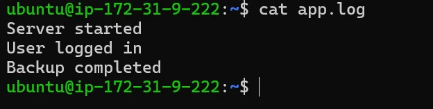
cat app.log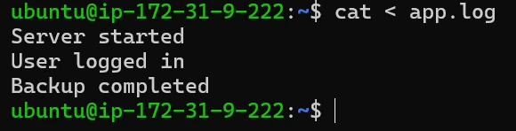
cat < app.log: the same three lines.Same result, so why bother? The point is where cat gets its input from.
<, the file simply takes the keyboard’s place on stdin.- 1
cat app.logapp.logis a file argument. cat opens and reads the file itself, then prints it. app.log → cat → terminal - 2
catalonecat reads what you type: keyboard → stdin → cat - 3
cat < app.logThe shell connects the file to stdin, so file → stdin → cat → terminal. cat never even sees a file name.
Instead of keyboard → stdin → command, < gives you file → stdin → command. That is the main idea. In real life: a program that normally asks you to type answers can be fed a prepared input file, so you don’t type the same information again and again.
tr from the Text Filters note: tr 'a-z' 'A-Z' < names.txt. Also, wc -l < app.log prints just the number, with no file name.Compare > and <
The arrow points the way the data flows: output goes TO the file with >; input comes FROM the file with <.
| · the pipe
One of the most useful ideas in Linux. So far:
| Operator | Connects |
|---|---|
> | command → file |
>> | command → file (add) |
< | file → command |
| | command → command |
command1 | command2 # take the output of command1 and give it as input to command2Without a pipe you would have to do it in three steps: run ls, save the output in a temporary file, let another command read that file. The pipe connects them directly:
This direct connection is called a pipe.
Practise: show only the .txt files
- 1Create a practice folder
mkdir pipe_practicethencd pipe_practice - 2Create different types of filessee the commands below
- 3The problem“Show me only the .txt files.” Plain
lsshows everything. - 4Try grep on its ownto see what it does with typed input
- 5Connect ls and grepwith a pipe
Steps 1–3
mkdir pipe_practice
cd pipe_practice
touch notes.txt
touch assignment.txt
touch program.c
touch app.log
touch server.log
touch student.pdf
ls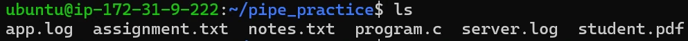
Plain ls gives you everything, but we only want assignment.txt and notes.txt. So we need another command to filter the output of ls: grep.
Step 4: grep on its own reads stdin
Before using the pipe, see what grep does. Run grep ".txt" with no file name. The command is now waiting for input. Type these four lines, then press Ctrl + D:
assignment.txt
program.c
notes.txt
app.log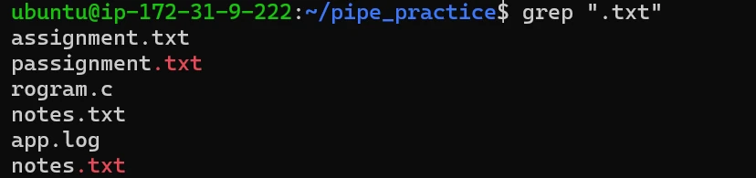
.txt is printed again at once (the copy with red .txt), so its output gets mixed in with your typing.grep read your typed lines from stdin and printed only the ones containing .txt. It doesn’t wait for Ctrl + D to answer; that key only tells it the input is finished.
Step 5: connect ls and grep
We already know ls produces the list of filenames, and grep ".txt" can filter input. So connect them using | and let ls do the typing:
ls | grep ".txt"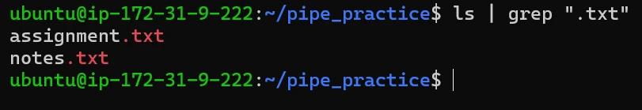
.txt files come through.The complete data flow:
. means “any character”, so ".txt" would also match a name like mytxtfile. For a strict match write grep '\.txt$': a real dot, then txt at the end of the line.ps aux | grep python (is the app running?), grep ERROR app.log | wc -l (how many errors?), journalctl -u app | tail -n 50 > debug.txt (grab the latest logs to share with the team).Redirecting errors: 2>
Remember that errors travel on their own stream, number 2. > on its own is short for 1>, so it only captures stdout; error messages still reach your screen. Put the stream number in front to redirect stderr:
| Form | Effect |
|---|---|
cmd > out.txt | stdout to the file, errors still on screen |
cmd 2> errors.txt | only errors to the file |
cmd > out.txt 2>&1 | both streams into the same file |
cmd 2> /dev/null | throw errors away (/dev/null discards everything written to it) |
cat app.log nonexistent_file.txt > out.txt 2> errors.txt
cat out.txt # the contents of app.log
cat errors.txt # cat: nonexistent_file.txt: No such file or directorycmd | grep x filters normal output; error messages bypass the pipe and print directly. Use cmd 2>&1 | grep x to search both.Key terms
- Redirection
- Changing where a command reads input from or writes output to, using operators like >, >> and <.
- stdin (0)
- Standard input: the stream a command reads input from. The keyboard by default.
- stdout (1)
- Standard output: the stream carrying a command’s normal output. The terminal by default.
- stderr (2)
- Standard error: a separate stream for error messages, so they can be handled apart from normal output.
- > (output redirection)
- Sends stdout into a file, creating the file if needed and replacing any existing content.
- >> (append)
- Adds stdout to the end of a file, keeping existing content; creates the file if it doesn’t exist.
- < (input redirection)
- Feeds a file’s contents to a command through stdin, in place of the keyboard.
- Pipe (|)
- Connects the stdout of one command directly to the stdin of the next, with no temporary file.
- 2>
- Redirects stderr (stream 2) to a file;
2>&1sends stderr wherever stdout is going. - /dev/null
- A special file that discards anything written to it; used to silence unwanted output.
Self-check
Pick an answer. You’ll see right away whether it’s correct and why.
notes.txt contains “Hello”. After echo "Linux" > notes.txt, what does it contain?
- Hello, then Linux
- Only Linux
- Only Hello
- Nothing
> replaces the file’s content. Use >> to append.
Which stream number belongs to error messages?
- 0
- 1
- 2
- 3
0 = stdin, 1 = stdout, 2 = stderr.
You want to add a new line to the end of app.log without losing anything. Which operator?
>>><|
>> appends to the end and keeps existing content.
What is different about cat < app.log compared with cat app.log?
- It prints the file backwards
- It changes app.log
- It prints only the first line
- The file arrives through stdin instead of as a file argument
The output looks the same, but with < the shell connects the file to cat’s stdin.
What does ls | grep ".txt" do?
- Saves the file list into .txt
- Sends the output of ls into grep, which prints only lines containing .txt
- Searches inside every .txt file
- Runs grep first, then ls
The pipe makes ls’s stdout become grep’s stdin; grep filters the names.
You run cat missing.txt > out.txt. Where does the “No such file” message go?
- Into out.txt
- Nowhere; it is lost
- To the terminal, because it is on stderr
- Into missing.txt
> only redirects stdout (1). Errors travel on stderr (2), which still goes to the screen.
Which line counts how many lines in server.log contain ERROR?
grep ERROR server.log | wc -lwc -l ERROR > server.loggrep ERROR < wc -lserver.log | grep ERROR | wc
grep picks the matching lines, the pipe passes them on, and wc -l counts them. (Option 2 would overwrite the log!)
All of it, in one sentence
Every command reads stdin (0) and writes stdout (1) and stderr (2); > saves output to a file (replacing it), >> appends, < feeds a file in as input, and | joins commands into a pipeline.
Next up: Command Chaining, where ;, && and || decide whether the next command should run at all.
— Vishwa Mohan